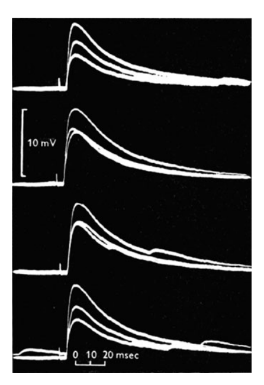
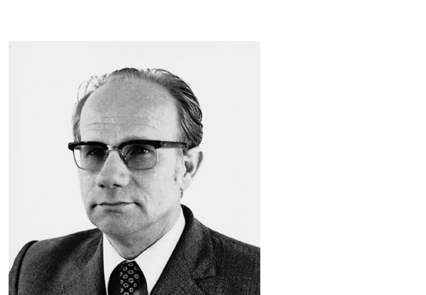

Chương 7 — Sinh lý học: Điện thế synap và điện thế thụ thể
Chương 7
Sinh lý học: Điện thế khớp thần kinh và điện thế thụ thể
Sau tính kích thích, đặc tính then chốt thứ hai của tế bào thần kinh là hoạt động diễn ra tại các khớp thần kinh (synapses) giữa các tế bào. Đây là đặc tính cốt yếu làm nền tảng cho hoạt động phối hợp của các quần thể tế bào thần kinh. Tương tự như điện thế hoạt động của các sợi thần kinh, các hoạt động tại khớp thần kinh được gọi là “điện thế khớp thần kinh” (synaptic potentials). Kỷ nguyên nghiên cứu điện thế khớp thần kinh được mở ra nhờ sự phát triển của các vi ống hút đầu mảnh có thể ghi lại các dòng điện và điện thế màng gần vị trí các khớp thần kinh. Một mô hình hàng đầu cho các cơ chế này là khớp thần kinh–cơ, nơi Bernard Katz và các đồng nghiệp chứng minh rằng điện thế hoạt động truyền tới trong dây thần kinh đã kích hoạt một điện thế tấm tận cùng (end-plate potential), được chứng minh là do tác động cộng gộp của nhiều đáp ứng thu nhỏ đối với các lượng tử chất dẫn truyền thần kinh (transmitter quanta), có lẽ tương ứng với sự giải phóng các túi từ tận cùng tiền khớp thần kinh. Mô hình hàng đầu khác là nơ-ron vận động tủy sống, được John Eccles và các cộng tác viên chứng minh là tạo ra các điện thế hậu khớp thần kinh kích thích và ức chế do sự giải phóng chất dẫn truyền tiền khớp thần kinh. Tính phổ quát của các cơ chế này đã được xác nhận ở các mẫu vật động vật không xương sống và ở các thụ thể cảm giác.
Khớp thần kinh như một khái niệm chức năng
Trong Chương 5, chúng ta đã thấy ý tưởng về các tương tác thần kinh diễn ra qua sự tiếp xúc đã nảy sinh như thế nào trong công trình của Ramón y Cajal và các đồng nghiệp vào những năm 1890, và thuật ngữ “khớp thần kinh” (synapse) đã được Sherrington đưa ra vào năm 1897 để chỉ vị trí tiếp xúc này.
Sherrington, vốn luôn là một nhà tư tưởng chuẩn xác, thực ra từng có phần phân vân không biết khớp thần kinh chủ yếu là một khái niệm giải phẫu hay sinh lý.
Ban đầu, ông dường như nghiêng về khái niệm giải phẫu. Nhưng đến khi xuất bản cuốn sách The Integrative Action of the Nervous System (1906, 16), ông đã tư duy chủ yếu theo các thuật ngữ chức năng. Trong một bước ngoặt rõ rệt thoát khỏi những suy đoán truyền thống, ông đã phác thảo một số chức năng tiềm năng mà một “bề mặt phân tách” tại tận cùng thần kinh có thể có:
Một bề mặt như vậy có thể hạn chế sự khuếch tán, tích tụ áp suất thẩm thấu, giới hạn sự dịch chuyển của các ion, tích lũy điện tích, duy trì một lớp điện kép, thay đổi hình dạng và sức căng bề mặt khi có sự thay đổi hiệu điện thế . . . hoặc đóng vai trò như một màng ngăn giữa các dung dịch điện giải loãng có nồng độ khác nhau hoặc các huyền phù keo có dấu điện tích khác nhau.
Đoạn văn này cho thấy Sherrington, dù làm việc ở cấp độ hệ thống, vẫn nắm bắt rất sát sao các nghiên cứu đương thời về đặc tính màng. Ông xem các tương tác khớp thần kinh có khả năng bao hàm nhiều đặc tính phức tạp vốn giữ vai trò then chốt để hiểu các cơ chế thần kinh làm nền tảng cho hành vi. Đáng chú ý là ông không đề cập đến “các chất tiếp nhận” (receptive substances) do các nhà dược lý học gợi ý vài năm trước đó. Ông cũng không nhắc đến bất kỳ cơ chế cảm ứng điện nào như Ramón y Cajal từng gợi ý. Nhưng ông có suy đoán về “các chất điện giải có nồng độ khác nhau”, có lẽ cho thấy ông đã biết đến lý thuyết Bernstein-Overton về điện thế màng (xem Chương 6).
Và mọi chuyện dừng lại ở đó suốt gần bốn thập kỷ. Đó không phải là vấn đề có thể tiếp cận ngay cả ở cấp độ cơ quan, như cách các nhà dược lý học có thể làm bằng việc thu thập các chất dẫn truyền thần kinh tiềm năng sinh ra khi kích thích dây thần kinh dẫn đến một cơ quan; bộ não quá phức tạp và dường như bất khả xâm nhập.
Bằng chứng điện sinh lý đầu tiên cho sự dẫn truyền qua khớp thần kinh
Vấn đề này cuối cùng đã được công phá khi các vi điện cực lần đầu tiên được đưa vào sử dụng vào cuối những năm 1930 (xem Chương 6), và các bản ghi có thể được thực hiện từ các mẫu vật dây thần kinh ngoại biên, khớp thần kinh–cơ và hạch thần kinh giao cảm. Nhiều nhóm trên khắp thế giới—Gopfert và Schaefer (1938) ở Đức, Feng (1941) ở Trung Quốc, và Eccles cùng các cộng tác viên (Eccles và O’Connor, 1939) ở Úc—đã báo cáo rằng xung động truyền tới tận cùng thần kinh trước tiên dẫn đến một “điện thế tấm tận cùng” cục bộ ở cơ tại vùng tấm tận cùng, sau đó kích hoạt điện thế hoạt động của cơ. Điện thế tấm tận cùng này là ví dụ đầu tiên về một đáp ứng khớp thần kinh và là bản ghi trực tiếp đầu tiên về tác động sinh lý của một khớp thần kinh. Những kết quả này cung cấp bằng chứng mạnh mẽ rằng, ít nhất là tại các khớp thần kinh ngoại biên này, sự dẫn truyền hóa học diễn ra khi acetylcholine (ACh) được giải phóng bởi tận cùng tiền khớp thần kinh và tác động lên tận cùng hậu khớp thần kinh để gây ra điện thế tấm tận cùng ở tế bào cơ và điện thế hậu khớp thần kinh ở tế bào hạch giao cảm. Ngay cả Eccles cũng phải đồng ý.
Như đã lưu ý ở Chương 4, điều này vẫn bỏ ngỏ câu hỏi liệu các khớp thần kinh trung ương có hoạt động theo cách tương tự hay không, và riêng Eccles vẫn bám víu vào ý tưởng rằng các khớp thần kinh trung ương có thể liên quan đến sự truyền dòng điện từ phía tiền khớp thần kinh sang phía hậu khớp thần kinh.
Tác động của các phép ghi nội bào
Bằng chứng về đặc điểm cốt yếu này, nhằm giải quyết dứt điểm tính phổ quát của cuộc tranh luận “súp đối đầu tia lửa” (soup vs. sparks), đòi hỏi phải phát triển được các phép ghi nội bào đáng tin cậy.
Các tế bào thần kinh trung ương rất nhỏ, thân tế bào của chúng có đường kính chỉ từ 5 đến tối đa 70 mm và sợi trục cũng như đuôi gai từ 0,1 đến 20 mm; vì vậy đầu ống hút phải cực nhỏ, từ 1 mm trở xuống. Hơn nữa, điện thế hoạt động diễn ra cực kỳ nhanh, chỉ kéo dài khoảng 1 mili giây, điều này đòi hỏi các thiết bị điện tử tinh vi, bao gồm các mạch lặp cực âm trở kháng cao, để ghi lại chính xác. Thiết bị này mãi đến sau chiến tranh mới được phát triển. Một trong những người đi đầu trong nỗ lực này là Jan Friedrich Toennies tại Viện Rockefeller ở New York, người mà như chúng ta đã thấy từng giúp ích rất nhiều cho Hodgkin trong công trình về điện thế hoạt động (xem Chương 6).
Như đã thảo luận ở Chương 6, các phép ghi nội bào đóng vai trò thiết yếu trong việc xác lập các cơ chế màng làm nền tảng cho điện thế hoạt động. Các bản ghi từ sợi trục mực ống có thể được thực hiện bằng cách luồn một sợi dây mảnh nhờ đường kính lớn bất thường của sợi trục. Các bản ghi sớm hơn từ dây thần kinh ngoại biên và hạch được thực hiện bằng những phương pháp sơ khai để kéo và nạp dung dịch dẫn điện vào vi ống hút cùng với thiết bị điện tử đời đầu để ghi điện thế. Tuy nhiên, để kỹ thuật này được sử dụng rộng rãi hơn, cần phải nghĩ ra một cách chuẩn hóa để chế tạo các ống hút trên lò vi rèn và cải tiến thiết bị điện tử cho việc ghi. Điều này lần đầu tiên được thực hiện bởi Gilbert Ling tại Chicago, làm việc cùng Ralph Gerard, một trong những nhân vật hàng đầu của sinh lý học thần kinh thời bấy giờ. Bài báo của Ling và Gerard (1947) đã chứng minh tính hiệu quả của phương pháp, sử dụng các bản ghi điện thế màng của cơ làm hệ thống mô hình (Phụ lục 7.1). Phải mất thêm vài năm nữa phương pháp này mới được hoàn thiện. Hodgkin và Nastuk (1950) đã thực hiện những bản ghi đầu tiên về điện thế hoạt động của cơ. Cuộc đua bắt đầu nổ ra nhằm phát triển phương pháp này để khảo sát tất cả các mẫu vật mà trước đó chỉ có thể ghi ngoại bào, ở cả hệ thần kinh ngoại biên và trung ương. Chỉ trong vòng vài năm, phương pháp này đã mở toang một thế giới mới của sinh lý học tế bào, bổ sung cho các cấu trúc tế bào được hé lộ bởi kính hiển vi điện tử. Chúng ta bắt đầu với khớp thần kinh mô hình đầu tiên: khớp thần kinh–cơ.
Bernard Katz và A. V. Hill
Cũng giống như điện thế hoạt động gắn liền với Hodgkin và Huxley, khớp thần kinh–cơ gắn liền với Bernard Katz. Sẽ rất hữu ích khi kể lại xuất thân của Katz, điều mà ông mô tả trong một cuốn hồi ký (Katz, 1996), như một ví dụ về một trong những sự kiện then chốt dẫn đến các bước đột phá vào giữa thế kỷ: sự bức hại các nhà khoa học Do Thái của Đức Quốc xã, cuộc trốn chạy của họ và sự đóng góp làm giàu nền khoa học ở các nền dân chủ phương Tây.
Bernard Katz sinh tại Leipzig năm 1911 nhưng lớn lên không có quốc tịch Đức vì vào thời điểm đó Leipzig nằm dưới quyền bá chủ của Nga. Sau Cách mạng Nga, ông vì thế trở thành người không quốc tịch. Ban đầu ông được đào tạo về cổ điển học, sau đó theo học y khoa và thấy mình bị thu hút bởi khoa học tự nhiên, nơi ông “nhận ra sức mạnh và chiều sâu của các ý tưởng khoa học cũng như việc chúng liên tục phải chịu sự phê phán và những thử nghiệm tiếp theo bằng thực nghiệm” (trang 361). Trong số các thầy của ông có Hans Held, nhà mô học tin vào sự liên tục của các tế bào thần kinh đối lập với Ramón y Cajal (xem Chương 5). Katz bị cuốn hút bởi sinh lý học thần kinh, đặc biệt là chủ đề như chúng ta đã thấy (Chương 6) được tranh luận sôi nổi thời bấy giờ về các định luật kích thích điện của dây thần kinh, say mê—ông viết sau này—“rằng người ta có thể thực hiện các phép đo chính xác và lặp lại được về tính kích thích điện trên các mô sống và biểu diễn kết quả bằng một phương trình toán học đơn giản” (trang 364). Ông tiến hành một số thí nghiệm đơn giản về tính thấm của cơ và phát hiện ra đáp ứng trở kháng của cơ khi bị kéo giãn, dẫn đến vài bài báo trên tạp chí Pflügers Archiv. Điều này có ý nghĩa vì hai lý do: Nó mang lại cho ông một giải thưởng nghiên cứu và các bài báo đã được A. V. Hill ở London chú ý. Hill là một trong những nhân vật sừng sỏ của khoa học và văn hóa Anh, một chuyên gia hàng đầu về sinh lý học thần kinh và cơ, một người chỉ trích mạnh mẽ sự trỗi dậy của Hitler và là nhân vật trung tâm trong nỗ lực nâng cao sự sẵn sàng của nước Anh cho cuộc chiến sắp tới trong những năm 1930.
Trong những năm sinh viên, Katz cùng những người Do Thái khác phải chịu đựng sự thù địch ngày càng gia tăng của Đức Quốc xã và đã nghiêm túc cân nhắc việc di cư sang Palestine. Tuy nhiên, sau cuộc phỏng vấn với Chaim Weizmann, nhà lãnh đạo phục quốc Do Thái nổi tiếng quen biết Hill, và một lá thư giới thiệu gửi tới Hill của giáo sư của ông là Martin Gildemeister, ông đã được mời sang gia nhập nhóm của Hill tại London. Không có quốc tịch, cách duy nhất để ông có được thị thực là thông qua “Hộ chiếu Nansen” (Nansenpass), “giấy chứng nhận nhân thân màu xanh lục được Cao ủy về Người tị nạn của Hội Quốc Liên cấp cho những người không quốc tịch” (trang 352). Thật là một sự trớ trêu thú vị khi Katz, nhà sinh lý học thần kinh, lại được cứu bởi Nansen, người bắt đầu sự nghiệp với tư cách một nhà giải phẫu học thần kinh, một trong những người sáng lập học thuyết nơ-ron, trước khi trở thành nhà thám hiểm Bắc Cực, nhà ngoại giao thế giới và nhà nhân đạo (được kể lại trong Shepherd, 1991).
Katz đến London vào tháng 2 năm 1935 và làm việc bốn năm với Hill về sự kích thích điện của dây thần kinh. Khi Hill được mời viết một bài tổng quan về chủ đề này cho tạp chí Ergebnisse der Physiologie vào năm 1938, ông đã chuyển nó cho Katz. Phản hồi lại bản thảo được gửi đi, biên tập viên trả lời rằng bài báo không thể được xuất bản nếu không có một đồng tác giả người Aryan. Một đồng nghiệp của Hill đã gợi ý Winston Churchill! Bài viết sau đó được xuất bản dưới dạng một chuyên khảo (xem trang 73). Xuất thân của Katz và sự việc này minh họa thái độ tàn bạo phi thường đối với người Do Thái nói chung và giới học thuật nói riêng trong những năm 1930 ở Đức, chỉ được xoa dịu phần nào nhờ những nỗ lực di cư hoặc trốn thoát thành công. Sự làm giàu cho thành tựu khoa học ở phương Tây là vô giá, như lịch sử khoa học thần kinh hiện đại đã minh họa rõ nét.
Trong thời gian ở phòng thí nghiệm của Hill, Katz trở thành bạn của những người dẫn đầu ngành sinh lý học thần kinh tại Anh, bao gồm Alan Hodgkin và Jack Eccles. Eccles chuyển đến Úc năm 1937, nơi như chúng ta đã thấy ông thực hiện những bản ghi đầu tiên về điện thế tấm tận cùng. Ông mời Katz sang tham gia cùng mình để duy trì nghiên cứu trong bối cảnh khá biệt lập đó. Stephen Kuffler cũng gia nhập cùng ông, và Katz đã trải qua hai năm với họ; bức ảnh ba người sải bước trên một con phố ở Sydney là một phần truyền thuyết của ngành (Hình 7.1). Sau đó, ông trải qua bốn năm trong quân ngũ, phần lớn thời gian ở New Guinea. Vào cuối chiến tranh, ông kết hôn và, như một món quà cưới từ Hill, nhận được một bức điện mời ông trở lại London làm trợ lý giám đốc nghiên cứu tại đơn vị lý sinh học của Hill. Sự gần gũi cá nhân của Hill với vợ chồng Katz thể hiện qua việc trong hai năm đầu tiên trở lại London, Hill đã cho họ ở nhờ ngay trong nhà riêng của mình. Có bao nhiêu người trong chúng ta có thể làm được điều đó ngay cả với những đồng nghiệp thân thiết nhất của mình?
Khi trở lại phòng thí nghiệm của Đại học College London, Katz phải tìm kiếm tận dụng thiết bị, như chúng ta đã thấy Hodgkin và những người khác từng làm, để khởi động lại nghiên cứu của mình trong một thành phố bị tàn phá nặng nề, nơi suốt nhiều năm vẫn phải chịu cảnh phân phối tem phiếu thực phẩm, thiếu than đá và tái thiết. Ông nối lại những mối quan tâm trước đây về sự kích thích thần kinh và các đặc tính của màng cơ, bao gồm cả việc quan sát hiện tượng chỉnh lưu bất thường (hướng vào trong). Nhiều mùa hè đã được ông dành để làm việc trên sợi trục mực ống cùng với Hodgkin, như đã đề cập trước đó. Bài báo cùng Hodgkin về dòng natri trong điện thế hoạt động là công trình đầu tiên của ông thu hút được sự chú ý rộng rãi hơn (Hodgkin và Katz, 1949). Sau đó, ông thực hiện nghiên cứu lớn đầu tiên của riêng mình, về thoi cơ của ếch, kết hợp các bản ghi sinh lý từ dây thần kinh trong dầu khoáng với một nghiên cứu kính hiển vi điện tử rất sớm cho thấy các tận cùng thần kinh mảnh và các bầu tận cùng trong thoi cơ (Katz, 1950). Tôi đã có nhiều dịp tham khảo bài báo này trong các công trình sau này về đáp ứng cảm giác của thoi cơ (Ottoson và Shepherd, 1971).
Điện thế tấm tận cùng và các lượng tử khớp thần kinh
Năm 1948, một người Mỹ tên là Paul Fatt đã gia nhập nhóm của Katz và cùng nhau họ khởi xướng một nghiên cứu nội bào về sự dẫn truyền qua khớp thần kinh tại khớp thần kinh–cơ của ếch. Fatt là một nhà tiên phong bị lãng quên của thời kỳ đó, một nhà thực nghiệm xuất sắc đã cộng tác trong việc xác lập hai bước tiến then chốt: điện thế tấm tận cùng cơ (EPP) cùng với Katz và bản chất của sự ức chế khớp thần kinh cùng với Eccles.
Công trình cùng Katz đã xác định EPP là đáp ứng hậu khớp thần kinh làm phát sinh điện thế hoạt động của cơ (Fatt và Katz, 1951; Phụ lục 7.2). Vai trò của ACh như một chất dẫn truyền thần kinh đã được xác lập qua công trình của họ, cũng như qua bằng chứng mô học của Couteaux ở Pháp (Chương 5). EPP trở thành mô hình hàng đầu để hiểu tất cả các khớp thần kinh hóa học và tiếp tục đóng một vai trò giá trị cho đến ngày nay, ngay cả khi các phương pháp hiện tại cho phép phân tích chi tiết các khớp thần kinh trung ương. Trong giai đoạn này, các mô hình khác cho hoạt động khớp thần kinh cũng được đưa ra, bao gồm khớp thần kinh khổng lồ của mực ống (Young, 1938; Bullock, 1948; Bullock và Hagiwara, 1957). Như chúng ta đã thấy, mô hình này cuối cùng được chứng minh là có cả sự dẫn truyền điện lẫn hóa học (xem Chương 5).
Khi ghi EPP ở độ khuếch đại cao, Fatt và Katz nhận thấy những điện thế đơn vị rất nhỏ (tất-cả-hoặc-không-có-gì) (Hình 7.2). Trong các bài nói chuyện sau này về những thí nghiệm này, Katz đùa rằng ban đầu họ đã kiểm tra hành lang bên ngoài xem liệu những tín hiệu đó có phải do tiếng bước chân nặng nề của A. V. khi ông sải bước dọc hành lang hay không. Một nghiên cứu kỹ lưỡng của del Castillo và Katz (1954a–c) đã mô tả đặc điểm của chúng như các điện thế tấm tận cùng thu nhỏ (MEPPs) và chứng minh rằng nhiều “lượng tử” (quanta) như vậy được giải phóng đồng thời bởi một điện thế hoạt động tại tận cùng để cộng gộp lại và tạo ra EPP hoàn chỉnh. Việc phân tích các lượng tử này đã vận dụng một cách tiếp cận toán học và thống kê tinh tế, gợi nhớ lại điều đã thu hút Katz đến với sinh lý học thần kinh ngay từ đầu khi còn là sinh viên, rằng “người ta có thể thực hiện các phép đo chính xác và lặp lại được ... trên các mô sống và biểu diễn kết quả bằng một phương trình toán học đơn giản” (Phụ lục 7.3).
Cách tiếp cận này dựa trên thống kê của các sự kiện ngẫu nhiên, chẳng hạn như sự phân rã phóng xạ, như được del Castillo và Katz (1954a, 263–264) giải thích:
Giả sử chúng ta có, tại mỗi khớp thần kinh–cơ, một quần thể gồm n đơn vị . . . có khả năng đáp ứng với một xung động thần kinh. Giả sử thêm rằng xác suất đáp ứng trung bình là p . . . khi đó số đơn vị trung bình đáp ứng với một xung động là m = np. . . . khi p rất nhỏ, số lượng đơn vị x tạo nên e.p.p. trong một loạt lớn các quan sát sẽ được phân bố theo cách đặc trưng của định luật Poisson (tần suất tương đối của chúng được cho bởi exp(–m) mx/x!).
Những phương trình này liên hệ biên độ của các lượng tử với số lượng sẵn có và xác suất giải phóng của chúng. Tần số của các điện thế thu nhỏ được kiểm soát bởi các đặc tính của màng tiền khớp thần kinh, trong khi biên độ của chúng được kiểm soát bởi các đặc tính của màng hậu khớp thần kinh. Công thức này trở nên mang tính nền tảng đối với việc hiểu điện thế khớp thần kinh cũng như các phương trình HH đối với việc hiểu điện thế hoạt động (Boyd và Martin, 1956). Các nghiên cứu bổ sung chứng minh rằng xác suất giải phóng được kiểm soát bởi điện thế màng (Liley, 1956), đúng như dự đoán, và bị ảnh hưởng bởi các loại thuốc (Nicholls và Quilliam, 1956). Các nghiên cứu sau đó của Katz và người đồng nghiệp lâu năm Ricardo Miledi (ví dụ 1963) đã xác lập vai trò thiết yếu của Ca2+ trong cơ chế giải phóng này.
Những lượng tử sinh lý này trước đó chưa từng được dự đoán. Người ta ngay lập tức nhận ra rằng chúng có thể được đối chiếu tương ứng với các túi khớp thần kinh (synaptic vesicles) được các nhà kính hiển vi điện tử làm việc độc lập xác định vào gần như cùng thời điểm (xem Chương 5). Một loạt nghiên cứu của Katz và những người khác đã cung cấp ngày càng nhiều bằng chứng cho thấy một túi chứa vài nghìn phân tử ACh, được giải phóng đồng thời khi túi vỡ ra lúc hòa nhập với màng sinh chất.
Vị trí hòa nhập túi dần được công nhận là một vùng hoạt động (active zone) (xem Chương 5), và sự giải phóng một túi khớp thần kinh đơn lẻ cùng tác động của chất dẫn truyền thần kinh của nó lên các thụ thể hậu khớp thần kinh đã được công nhận là đơn vị hoạt động cơ bản tại các khớp thần kinh hóa học, thiết yếu đối với tổ chức chức năng của não bộ chẳng kém gì liên kết hóa học đối với tổ chức và tương tác của các phân tử. Với sự ra đời của các kỹ thuật DNA tái tổ hợp, những cơ chế đó đã được soi xét không ngừng nghỉ, với nhiều nhân tố phân tử tham gia vào từng bước huy động và hòa nhập túi ở phía tiền khớp thần kinh và hoạt hóa thụ thể ở phía hậu khớp thần kinh. Mỗi bước trong số này đều là một vị trí tác động tiềm năng cho một rối loạn di truyền, một độc tố, hoặc một loại thuốc có thể cải thiện một rối loạn hệ thần kinh.
Khớp thần kinh trung ương: Eccles và nơ-ron vận động tủy sống
Cuộc cách mạng song hành trong việc tìm hiểu cơ chế của các khớp thần kinh ở hệ thần kinh trung ương được dẫn dắt bởi Eccles, người thầy, người bạn và người đồng nghiệp của Katz từ Úc. Eccles là một nhân vật có tầm ảnh hưởng áp đảo đến mức trong việc xác lập sinh lý học của nơ-ron vào những năm 1950—xuất bản hơn 500 bài báo và sách trong suốt cuộc đời và đào tạo hơn 200 học trò—nên việc mô tả quỹ đạo sự nghiệp của ông là rất xác đáng, đặc biệt vì ngày nay ký ức về cách tri thức của chúng ta về khớp thần kinh trung ương lần đầu tiên được khai phá từ mô hình tủy sống đang dần phai nhạt. Câu chuyện sau đây dựa trên Shepherd (2008); xem thêm số báo tri ân của Stuart và Pierce (2006).
Xuất thân. Eccles sinh tại Melbourne, New South Wales, Úc, vào năm 1903. Cha mẹ ông đều là giáo viên và theo Công giáo, một nền tảng gia đình đã định hình sự nghiệp tương lai của ông. Ông nhận đào tạo đại học và y khoa tại Đại học Melbourne, tốt nghiệp năm 1925 với bằng danh dự hạng nhất. Ông giành được Học bổng Rhodes để theo học tại Đại học Oxford, nơi ông gia nhập nhóm các nhà nghiên cứu trẻ xuất sắc bao gồm Derek Denny-Brown, John Farquhar Fulton, R. S. Creed và E. G. T. Liddell, thực hiện một loạt nghiên cứu dưới sự hướng dẫn của Charles Sherrington về các phản xạ tủy sống. Điều này dẫn đến cuốn sách mang tính bước ngoặt Reflex Activity in the Spinal Cord (1932) của Creed và cộng sự. Liddell sau này kể với tôi rằng họ đã gấp rút hoàn thành bản thảo để kịp hỗ trợ cho việc trao Giải Nobel cho Sherrington (cùng với Adrian) vào năm đó.
Trong thời gian này, Eccles hoàn thành bằng Cử nhân Khoa học (BS) tại Oxford năm 1927 và Tiến sĩ (DPhil) năm 1929, sau đó trở thành giảng viên hướng dẫn tại Cao đẳng Magdalen và trợ giảng thực hành đại học năm 1934. Sherrington nhận ông làm trợ lý nghiên cứu cho những thí nghiệm cuối cùng của mình về sự kích thích và ức chế các phản xạ tủy sống. Sau đó, Eccles phát triển các nghiên cứu riêng về sự dẫn truyền qua khớp thần kinh ở hạch giao cảm, trong đó ông diễn giải các phát hiện của mình theo hướng dẫn truyền điện giữa các dây thần kinh bị kích thích và các tế bào hậu khớp thần kinh. Điều này đưa ông vào thế đối đầu với các bằng chứng dược lý học mới nổi của H. H. Dale, Wilhelm Feldberg, Lindor Brown và những người khác về sự giải phóng và tác động của các chất dẫn truyền hóa học tại các điểm nối khớp thần kinh giữa tận cùng sợi tế bào thần kinh và các tuyến cũng như cơ đích của chúng.
Như đã mô tả ở Chương 4, điều này làm bùng lên các cuộc tranh luận “súp đối đầu tia lửa”, thường dẫn đến những trận khẩu chiến nảy lửa giữa những người tham gia từ hội nghị này sang hội nghị khác suốt những năm 1930. Như đã đề cập ở Chương 4, Bernard Katz, với tư cách là một người tị nạn từ Đức vào giữa những năm 1930, đã kinh ngạc trước cách Eccles trẻ tuổi và Dale lớn tuổi công kích nhau dữ dội đến thế trong các cuộc họp này, và càng kinh ngạc hơn khi thấy họ sau đó lại cùng nhau nhâm nhi rượu sherry và dùng bữa tối thân mật.
Sự cô lập. Sherrington nghỉ hưu năm 1935 (ở tuổi 75, sau khi được gia hạn đặc biệt). Mặc dù Eccles là một ứng cử viên hiển nhiên để kế nhiệm ông, sự bộc trực và hiếu chiến kiểu Úc của ông có phần quá sức đối với giới học thuật Oxford, và John Mellanby đã được bổ nhiệm. Năm 1937, Eccles rời đi để trở về Úc (một lộ trình sự nghiệp phổ biến từ đào tạo ở Anh trở về các thuộc địa), đứng đầu một đơn vị nghiên cứu y khoa nhỏ tại Viện Bệnh học Kanematsu ở Sydney. Đó gần như là sự quên lãng đối với ông, không có kết nối đại học, không tiếp cận được sinh viên và một ban quản trị thiếu thiện cảm. Việc chiến tranh bùng nổ ở châu Âu vào tháng 9 năm 1939 đã chuyển hướng phần lớn sự chú ý của ông sang nỗ lực chiến tranh. Nhờ vận may lớn, ông có sự tham gia của cả Katz và một người tị nạn khác là Stephen Kuffler, được ghi lại qua bức ảnh nổi tiếng ba người dạo bước trên một con phố ở Sydney (Hình 7.1). Như đã lưu ý, vào năm 1939 Eccles công bố các bản ghi điện sinh lý từ khớp thần kinh–cơ với bằng chứng về sự dẫn truyền hóa học, đồng thời với các báo cáo tương tự của Feng ở Trung Quốc và Schaefer ở Đức. Mặc dù đây là một bước đột phá lớn trong việc phân tích sinh lý học của khớp thần kinh, nó cũng bác bỏ chính giả thuyết điện của ông, ít nhất là đối với sự dẫn truyền qua khớp thần kinh ngoại biên.
Với triển vọng ảm đạm tại viện nghiên cứu, năm 1944 Eccles nhận lời làm giáo sư sinh lý học tại Đại học Otago ở Dunedin, New Zealand. Bất chấp vị trí hẻo lánh, nơi đây mang lại cơ hội trở lại môi trường học thuật cho nghiên cứu của ông, dù đi kèm khối lượng giảng dạy nặng nề. Ông kể lại rằng trong năm đầu tiên ông đã giảng toàn bộ các bài giảng sinh lý học, tổng cộng khoảng 500 giờ lên lớp. Ở mặt tích cực, điều đó rèn cho ông tính kỷ luật trong việc sử dụng thời gian và một cái nhìn bao quát về các nguyên lý sinh lý học.
Ông vẫn còn chán nản trước sự thất bại của các dự đoán lý thuyết của mình trong những năm 1930, cho đến khi gặp triết gia Karl Popper ở New Zealand. Popper lúc đó đang phát triển triết học khoa học của mình, với châm ngôn rằng khoa học không bao giờ có thể chứng minh một giả thuyết là đúng mà chỉ có thể bác bỏ (falsify) nó; do đó, mục tiêu của nhà khoa học là dựng lên những giả thuyết có thể kiểm chứng và bác bỏ được. Theo quan điểm này, Eccles thực chất đã thúc đẩy khoa học tiến lên bằng cách tự chứng minh mình sai. Khái niệm mới về cách làm khoa học này đã giải cứu Eccles khỏi cơn trầm cảm, và hai người trở thành bạn thân suốt đời. “Tôi đã được Popper thúc giục xây dựng các giả thuyết về sự kích thích và ức chế điện thành những mô hình mời gọi sự kiểm chứng thực nghiệm và bác bỏ” (Eccles, 1977, 6). Eccles ngầm thêm vào một hệ quả tất yếu cho điều này: Chỉ có Eccles mới được phép bác bỏ các giả thuyết của Eccles!
Bất chấp sự cô lập của Dunedin, sau chiến tranh ông đã tập hợp được một nhóm sinh viên và đồng nghiệp trẻ xuất sắc từ New Zealand và nước ngoài, bao gồm nhà điện sinh lý học Archibald McIntyre trong ban giảng viên và nhà lý sinh học người Mỹ Wilfrid Rall với tư cách nghiên cứu sinh tiến sĩ. Trong nhiều năm, ông theo đuổi giả thuyết về sự dẫn truyền điện tại các khớp thần kinh trong tủy sống. Điều này đòi hỏi những lập luận quanh co để giải thích các dòng điện có thể gây ra sự ức chế hậu khớp thần kinh. Ở một nơi xa xôi như vậy, một người kém động lực hơn hẳn đã có thể bị tụt lại trong kỷ nguyên hậu chiến đầy sôi động của nghiên cứu tế bào hiện đại và trôi dạt khỏi dòng chảy chính.
Tuy nhiên, vào khoảng năm 1950, McIntyre trở về từ Viện Rockefeller mang theo sơ đồ mạch của bộ khuếch đại tối tân mới do Jan Friedrich Toennies, kỹ sư xuất sắc người Đức (người mà trước chiến tranh, như chúng ta đã lưu ý ở Chương 6, đã hướng dẫn Alan Hodgkin về mạch lặp cực âm cho các nghiên cứu sợi trục mực ống của ông), chế tạo. Dexter Easton (trao đổi cá nhân) mang đến tin rằng J. Walter Woodbury và Harry Patton ở Seattle đang bắt đầu thực hiện các phép ghi nội bào trong tủy sống. Easton kể với tôi rằng điều này đã kích thích Eccles dồn toàn bộ tâm trí vào mục tiêu này, với một cường độ mà nhóm ở Seattle không thể sánh kịp.
Cuộc chạy đua tìm kiếm điện thế khớp thần kinh trung ương. Đó là một khoảnh khắc đặc biệt đối với Eccles, “một cuộc khủng hoảng trong đời tôi” (trang 6). Bị thúc đẩy bởi nỗi sợ thua cuộc trước đối thủ, ông quyết tâm phải về đích đầu tiên. Ông cần những bàn tay phụ giúp để làm điều đó. Theo Rall (trao đổi cá nhân), Eccles đã nhờ John Coombs, một nhà vật lý, giúp đỡ về mặt điện tử để thực hiện công việc vi điện cực. Coombs thấy điều đó thú vị và quyết định tự mình làm, chế tạo bộ khuếch đại lặp cực âm cần thiết có trở kháng đầu vào cao để giảm điện dung đầu vào và trung hòa điện dung ống hút bằng hồi tiếp âm.
Laurence Brock vừa hoàn thành khóa học y khoa; anh rất khéo tay và đảm nhận việc kéo các vi ống hút. Việc này được thực hiện trên lò vi rèn, đòi hỏi (như tôi biết từ chính công việc của mình vài năm sau trên một thiết bị tương tự) sự tập trung cao độ để kéo các ống hút thành đầu nhọn mảnh và sự may mắn để nạp đầy dung dịch điện cực vào chúng. Rall trước đó đã bắt đầu làm việc với Eccles nhưng quyết định sẽ tự thực hiện dự án riêng dưới sự hướng dẫn của Archibald McIntyre cho luận án tiến sĩ của mình. McIntyre là một người ôn hòa đang ở giai đoạn đầu sự nghiệp. Lúc bấy giờ, Eccles vẫn đang sử dụng các bộ ngắt con lắc Lucas cơ điện cổ điển làm máy kích thích, ghi dữ liệu lên các tấm phim âm bản thủy tinh được tráng ngay trong quá trình làm việc. Khi nhận ra mình cần thiết bị tối tân của McIntyre, ông đơn giản là tiếp quản nó. Các thí nghiệm trong phòng thí nghiệm của McIntyre được tiến hành sau những cánh cửa đóng kín. Mọi nỗ lực đều dồn vào việc đánh bại người Mỹ. Có lần tôi hỏi McIntyre liệu ông có muốn viết một bản tường thuật ngắn về thời kỳ đó không, nhưng điều đó quá khó khăn để ông có thể đối mặt.
Eccles và các đồng nghiệp lao vào thực hiện các phép ghi nội bào từ các nơ-ron vận động trong tủy sống để đáp ứng với các cú sốc điện vào rễ bụng, nhằm kích hoạt các nơ-ron vận động theo chiều ngược (antidromically), và vào rễ lưng, nhằm kích hoạt chúng theo chiều thuận bình thường (orthodromically).
Các bản ghi ngay lập tức cho thấy việc kích thích các dây thần kinh cảm giác từ một cơ chủ vận đã tạo ra các điện thế hậu khớp thần kinh kích thích (EPSPs) gây khử cực ở một nơ-ron vận động. Tương tự như EPP vừa được Fatt và Katz chứng minh gần đây, hiện tượng này được giả thuyết là liên quan đến sự gia tăng độ dẫn điện không đặc hiệu đối với các ion Na và K, làm khử cực màng tiến về phía không.
Ngược lại, việc kích thích một cơ đối vận lại tạo ra một điện thế tăng phân cực ức chế mọi hoạt động của tế bào; do đó, nó được đặt tên là “điện thế hậu khớp thần kinh ức chế” (IPSP). Trong khi sự khử cực của một EPSP có thể được lý giải là do dòng điện chạy từ tận cùng tiền khớp thần kinh, điều này không thể giải thích được sự tăng phân cực của một IPSP. Lập luận này cùng các lập luận khác cuối cùng đã thuyết phục Eccles rằng giả thuyết điện về sự dẫn truyền qua khớp thần kinh đã chết.
. . . một lời giải thích bằng điện cho sự dẫn truyền ức chế dường như là vô cùng bất khả thi. Nó đòi hỏi phải đặt ra giả định về những đặc tính điện đặc biệt khác hẳn về chất so với những gì đã được hé lộ qua các khảo sát thấu đáo về màng bề mặt.
Do đó, có thể kết luận rằng hoạt động khớp thần kinh ức chế có lẽ được trung gian bởi một chất dẫn truyền đặc hiệu được giải phóng từ các cúc tận cùng khớp thần kinh ức chế, và gây ra một quá trình tăng phân cực chủ động ở màng bên dưới của nơ-ron vận động.
(Eccles 1953, 163)
Giả thuyết điện đã bị đánh sập một cách vẻ vang bởi chính kiến trúc sư theo chủ nghĩa Popper của nó!
Đối với cơ chế mới, ban đầu Eccles nghiêng về một bơm natri giúp tăng phân cực màng bằng cách đẩy các ion Na mang điện tích dương ra ngoài. Trùng hợp thay, Fatt và Katz, như thể các nghiên cứu về EPP của họ vẫn chưa đủ, vào thời điểm này cũng đang tiến hành một nghiên cứu về các sợi ức chế dẫn đến cơ cua. Nghiên cứu này tận dụng thực tế là, trong khi cơ động vật có xương sống chỉ có các đầu vào kích thích (thông qua khớp thần kinh–cơ), động vật không xương sống có thể có cả sợi kích thích và sợi ức chế. Nghiên cứu này (Fatt và Katz, 1952, 164) cung cấp bằng chứng cho thấy sự ức chế là do sự tăng phân cực gây ra bởi sự gia tăng độ dẫn điện đối với K (tương tự như sự tăng phân cực do K sau điện thế hoạt động). Ngoài ra, các thí nghiệm của Burgen và Terroux (1952) gợi ý rằng sự ức chế mà ACh tạo ra ở cơ tim (mẫu vật kinh điển của Loewi, xem Chương 4) rất có thể là do sự gia tăng độ dẫn điện K+. Các thí nghiệm tiếp theo chứng minh rõ ràng rằng cơ chế này có khả năng cao hơn, và cuối cùng người ta chứng minh được rằng nó cũng liên quan đến sự gia tăng độ dẫn điện Cl–.
Các kết quả ban đầu của Eccles được công bố trong một loạt bài báo trên tạp chí Journal of Physiology bắt đầu từ năm 1951 (Brock và cộng sự, 1952) (Hình 7.3, Phụ lục 7.4).
Trong năm đó, Eccles nhận lời mời trở về Úc, làm giáo sư sinh lý học tại Đại học Quốc gia Úc mới thành lập ở Canberra. Phải mất 15 tháng để các phòng thí nghiệm mới sẵn sàng, một khoảng thời gian gián đoạn có thể gây chí tử cho sự nghiệp khoa học của một người bình thường ở thời điểm then chốt đó. Tuy nhiên, như thường lệ, Eccles đã tận dụng tối đa khoảng thời gian này. Ông dành năm tháng đi công tác vào đầu năm 1952, đầu tiên đến hội nghị chuyên đề Cold Spring Harbor về nơ-ron, nơi ông tìm hiểu về mô hình điện thế hoạt động Hodgkin-Huxley và công trình về khớp thần kinh–cơ của Katz, sau đó trở lại Anh để tổng kết các kết quả mới trong Chuỗi bài giảng Waynflete, được trình bày tại Cao đẳng Magdalen ở Oxford năm 1952 và xuất bản trong cuốn The Neurophysiological Basis of Mind: The Principles of Neurophysiology năm 1953.
Theo nhiều cách, công trình và cuốn sách này đã khai sinh nền sinh lý học tế bào hiện đại của hệ thần kinh trung ương. Nó xác lập các chức năng cơ bản của các khớp thần kinh hóa học kích thích và ức chế, ngay trước khi chúng lần đầu tiên được quan sát về mặt hình thái học dưới kính hiển vi điện tử. Hơn nữa, chúng được phát triển vững chắc trong bối cảnh các khái niệm hiện đại mới nổi về đặc tính màng tế bào, nhờ sự tiếp thu nhanh chóng của ông đối với công trình của Hodgkin và Huxley trong việc phát triển mô hình điện thế hoạt động ở sợi trục mực ống và của Katz và Fatt trong mô hình khớp thần kinh–cơ. Nó ngay lập tức vạch ra tương lai của khoa học thần kinh tế bào và mạch thần kinh, vào thời điểm mà sinh lý học thần kinh thống trị các nghiên cứu về hệ thần kinh, trước khi có sự ra đời của các phương pháp sinh hóa và dược lý học mà ngày nay chúng ta coi là hiển nhiên. Đối với một sinh viên y khoa trẻ tuổi vào những năm 1950 quyết tâm trở thành nhà sinh lý học thần kinh, cuốn sách đó, nếu không phải là bia đá của Moses, thì cũng là thứ gần giống như vậy.
Bầu không khí đột nhiên trở nên quang đãng; sự dẫn truyền hóa học là cách các nơ-ron giao tiếp thông qua các khớp thần kinh, điều này nhận được sự ủng hộ mạnh mẽ từ những phát hiện của kính hiển vi điện tử về cấu trúc tinh vi của khớp thần kinh hóa học (xem Chương 5). Chỉ trong vài năm, các khớp thần kinh điện cũng được Furshpan và Potter mô tả và cơ sở của chúng tại các khe nối (gap junctions) được chứng minh (Chương 5), mang lại cho chúng ta hiểu biết hiện nay về cả sự dẫn truyền hóa học và dẫn truyền điện trong hệ thần kinh trung ương.
Khi các phòng thí nghiệm mới hoàn thành, Eccles, cùng với số lượng sinh viên ngày càng đông từ khắp nơi trên thế giới và ngày càng nhiều phòng thí nghiệm khác tham gia cuộc săn tìm, đã lao vào các nghiên cứu về tổ chức khớp thần kinh của nơ-ron và việc xác định các con đường khớp thần kinh đầu tiên trong hệ thần kinh trung ương. Những nghiên cứu này sẽ được đề cập tương ứng trong Chương 8 và Chương 9, cùng với sự đánh giá về sự nghiệp và tầm ảnh hưởng của Eccles.
Mở rộng mô hình hoạt động khớp thần kinh
Phương pháp nội bào nhanh chóng được các phòng thí nghiệm khác tiếp nhận, vừa để kiểm chứng chính mô hình nơ-ron vận động vừa để mở rộng nó sang các loại tế bào khác. Những đối tượng này bao gồm nơ-ron vận động ở các loài khác (Woodbury và Patton, 1952; Araki và cộng sự, 1953; Araki và Otani, 1955; Frank và Fuortes, 1955, 1956); các tế bào của cơ quan phát điện ở cá (Albe-Fessard và Buser, 1954); và các nơ-ron tháp vỏ não, những bản ghi nội bào đầu tiên của các tế bào trong não phía trên tủy sống (Phillips, 1955, 1956a, 1956b; Albe-Fessard và Buser, 1955). Chúng ta sẽ đề cập đến các nghiên cứu trong não ở Chương 9.
Các hệ thống đơn giản ở động vật không xương sống
Một số nhà điện sinh lý học đã theo đuổi việc nghiên cứu các đặc tính khớp thần kinh ở động vật không xương sống. Có tầm quan trọng đặc biệt trong số đó là Ladislav Tauc (Hình 7.4).
Ladislav Tauc. Ông sinh ra tại Tiệp Khắc vào năm 1926. Năm 1945, ngay sau chiến tranh, ông bắt đầu theo học tại Đại học Masaryk, thực hiện nghiên cứu đầu tiên về các tín hiệu điện của tế bào thực vật. Sau đó, ông nhận được học bổng sang Paris học tập, nơi ông được Alfred Fessard, nhân vật hàng đầu trong sự phát triển của điện sinh lý học tại Pháp những năm 1950, dìu dắt tại Viện Marey. (Nhân tiện, đừng cố đi hành hương đến Viện Marey; nó đã bị san phẳng để nhường chỗ cho Roland Garros, địa điểm tổ chức giải quần vợt Pháp Mở rộng.) Sau khi theo đuổi thêm các nghiên cứu về hoạt động điện của nhiều tế bào khác nhau ở thực vật và mô thần kinh, ông quyết định tập trung vào hệ thần kinh của loài sên biển Aplysia (trong văn bản ghi là sên vườn Aplysia).
Người đầu tiên sử dụng Aplysia cho các nghiên cứu điện sinh lý là Angelique Arvanitaki ở Marseilles vào năm 1941. Theo đồng nghiệp của Tauc là Maurice Israel (2000, 47):
Việc đưa vào sử dụng một bộ não “đơn giản hóa” (hệ thần kinh của Aplysia) để nghiên cứu cơ sở tế bào và phân tử của các tương tác thần kinh có tổ chức, có lẽ là một trong những đóng góp thiết yếu nhất của Tauc cho khoa học thần kinh. Khi ông đưa điện sinh lý học hiện đại vào nghiên cứu hệ thần kinh của Aplysia, không ai hình dung được rằng bộ não đơn giản của một loài thân mềm lại có vai trò quyết định đến thế đối với việc tìm hiểu các hệ thần kinh phức tạp hơn. Ngay chiếc vi điện cực đầu tiên mà Tauc chọc vào một nơ-ron của Aplysia đã là bước đột phá khởi đầu cho các nghiên cứu hiện đại về đặc tính lý sinh của nơ-ron. Nhờ những đặc tính vượt trội của nó, mô hình này đã được hàng trăm nhà nghiên cứu sinh học thần kinh trên khắp thế giới sử dụng. Thật vậy, mỗi nơ-ron giờ đây đã được định danh, và các kênh ion, chất dẫn truyền cũng như thụ thể của nó đã được mô tả đặc điểm.
Cũng giống như sợi trục khổng lồ của mực ống đã giúp Hodgkin và Huxley hé lộ bản chất của xung động thần kinh và nơ-ron vận động của tủy sống đã hé lộ bản chất của điện thế khớp thần kinh ở tế bào thần kinh, các nơ-ron khổng lồ của Aplysia đã cho phép Tauc tiến thêm một bước nữa và nghiên cứu đặc tính màng ở các nơ-ron đã được định danh. Trong nhiều trường hợp, những thân tế bào lớn này có thể được nhận diện giống nhau qua từng cá thể; chúng có thể được đặt tên riêng! Bắt đầu từ năm 1954, ngay sau các báo cáo về điện thế hoạt động Hodgkin-Huxley (Chương 6) và điện thế khớp thần kinh của nơ-ron vận động tủy sống (xem ở trên), ông đã khởi xướng một loạt nghiên cứu, tập trung vào các tế bào đã được định danh trong hạch bụng. Những nghiên cứu này được tóm tắt trong Bảng 7.1.
Bảng 7.1 Các khảo sát ban đầu về điện sinh lý học của Aplysia do Ladislav Tauc thực hiện
Đáp ứng khớp thần kinh (1955) Các loại hoạt động điện cơ bản được gây ra (1955) và tự phát (1955) Điện thế hậu khớp thần kinh ức chế (1956) Đặc tính lý sinh (1956) Dao động dưới ngưỡng (1956) (cùng A. Fessard) Điện thế điện trương (1957) (cùng A. Fessard) Thêm về điện thế ức chế (1957) Đáp ứng ngược chiều dội lại (1957) Đáp ứng với các chất được tiêm vào (1958) Đáp ứng khớp thần kinh lặp lại (1958) (cùng A. Fessard) Tác động liên nơ-ron (1958) Tác động của sự tăng phân cực (1958) Bằng chứng về sự tồn tại của các nơ-ron trung gian (1959) Sự tăng phân cực kéo dài (1959)
(Xem mục tauc l, tại http://www.ncbi.nlm.nih.gov/pubmed/, để tra cứu các tài liệu tham khảo này).
Đó là một loạt nghiên cứu tiên phong phi thường. Tiếc thay, thế giới bên ngoài hầu như không biết đến vì mọi nghiên cứu đều được xuất bản bằng tiếng Pháp. Tuy nhiên, một vài người đã chú ý. Khi nước Pháp bắt đầu phục hồi sau chiến tranh, các nhà khoa học nước này đã tái thiết lập liên lạc với các đồng nghiệp bên ngoài. Vào cuối những năm 1950, Arvanitaki-Chalazonitis và Tauc đã đến thăm Hoa Kỳ và có các bài giảng về công trình của họ đối với điện sinh lý học của các nơ-ron khổng lồ ở Aplysia. Eric Kandel (2006) mô tả cách ông, khi sắp kết thúc thời gian đào tạo cùng Wade Marshall và Kay Frank tại Viện Y tế Quốc gia (NIH), đã tìm kiếm một mẫu vật cho phép ông theo đuổi mục tiêu của mình về
. . . một loài động vật có phản xạ đơn giản có thể được biến đổi thông qua học tập và được kiểm soát bởi một số lượng nhỏ các tế bào thần kinh lớn mà con đường từ đầu vào đến đầu ra của chúng có thể được xác định. Bằng cách đó, tôi có thể liên hệ những thay đổi trong phản xạ với những thay đổi trong các tế bào.
(trang 144)
Ông nhận ra những ưu thế của Aplysia cho mục đích này và sắp xếp để đến làm việc cùng Tauc để đào tạo sau thời gian nội trú tâm thần học. Trong khoảng thời gian chuyển tiếp này, chính Kay Frank đã dành thời gian làm việc với Tauc, đưa phương pháp kẹp điện thế vào nghiên cứu các đặc tính màng của nơ-ron Aplysia. Công bố đầu tiên của Kandel cùng Tauc có tựa đề “Cơ chế của sự tạo thuận dị khớp thần kinh kéo dài” (Mechanism of Prolonged Heterosynaptic Facilitation) (Kandel và Tauc, 1964) (tổng cộng, họ đã công bố năm nghiên cứu cùng nhau, ba nghiên cứu bằng tiếng Anh), điều đã mở đầu cho những nghiên cứu xuất sắc của Kandel về tính dẻo phụ thuộc hoạt động của các tác động khớp thần kinh có thể làm nền tảng cho học tập và trí nhớ. Phần còn lại, như người ta vẫn nói, đã trở thành lịch sử (xem cuốn hồi ký In Search of Memory của Kandel, 2006). Trong khi đó, Hersch (Coco) Gerschenfeld, một nhà điện sinh lý học thần kinh người Argentina, đã gia nhập nhóm của Tauc vào cuối những năm 1950 và cùng ông khởi xướng phân tích các chất dẫn truyền thần kinh, bắt đầu với ACh. Dù các nghiên cứu của họ kéo dài vượt ra ngoài trọng tâm chính của chúng ta là thập niên 1950, chúng ta cần lưu ý rằng sự hợp tác của họ có ý nghĩa vì hai lý do. Thứ nhất, nó đưa Aplysia vào dòng chảy chính của mối quan tâm đối với các câu hỏi then chốt về chất dẫn truyền thần kinh và tác động của chúng, dẫn đến chứng minh mang tính đột phá rằng một chất dẫn truyền duy nhất có thể được giải phóng bởi một nơ-ron đã định danh và tạo ra cả tác động kích thích lẫn ức chế lên một nơ-ron đã định danh khác. Thứ hai, các công bố của họ (xem Gerschenfeld và Tauc, 1961) được viết bằng tiếng Anh trên tạp chí Nature, đưa Aplysia đến với sự chú ý của thế giới bên ngoài nước Pháp.
Tầm ảnh hưởng của Tauc cũng rất quan trọng ngay trong nước Pháp: Phillippe Ascher và JacSue Kehoe gia nhập phòng thí nghiệm sau đó vào những năm 1960 và cùng với Gerschenfeld nhanh chóng trở thành những người dẫn đầu trong lĩnh vực điện sinh lý học hệ thần kinh ở Pháp, đặc biệt là trong việc bắc cầu nối với thế giới nói tiếng Anh.
Điện thế thụ thể của các thụ thể cảm giác
Cuộc tìm kiếm các tế bào lớn và dễ tiếp cận để phân tích sinh lý học đã dẫn J. S. Alexandrowicz (1953) đến với tế bào thụ thể căng của tôm hùm đất. Trong mẫu vật này, các đuôi gai của tế bào tận cùng bằng những nhánh đan xen vào bên trong các sợi cơ. Stephen Kuffler và một nghiên cứu sinh sau tiến sĩ đến từ Chile, Carlos Eyzaguirre, ngay lập tức tận dụng nó cho nghiên cứu sinh lý học. Các bản ghi của họ (Eyzaguirre và Kuffler, 1955a, 1955b) cho thấy sự kéo căng cơ tạo ra một điện thế khử cực lan truyền qua các đuôi gai đến thân tế bào để khởi phát điện thế hoạt động, truyền thông điệp tiếp đến hạch thần kinh của tôm hùm đất. Đây là minh chứng rõ ràng nhất về điện thế thụ thể của một tế bào thụ thể cảm giác đối với kích thích của nó.
Họ tiếp tục chứng minh rằng tế bào thụ thể căng cũng nhận sự ức chế khớp thần kinh từ các sợi thần kinh trung ương và đã có thể nghiên cứu chi tiết cách thức tương tác giữa các điện thế khử cực và tăng phân cực đối lập kiểm soát sự khởi phát điện thế hoạt động trong sợi trục. Cùng với công trình của phòng thí nghiệm Eccles, điều này đã cung cấp một mô hình tinh tế về cách các điện thế hậu khớp thần kinh được tích hợp bên trong tế bào thần kinh. Sự tích hợp này liên quan đến các đuôi gai, điều đòi hỏi phải thảo luận về cấp độ tổ chức tiếp theo này bên trong tế bào trong Chương 8.
Các phép ghi nội bào từ tế bào võng mạc đã được Gunnar Svaetichin thử nghiệm tại Stockholm vào năm 1954, nhưng những kết quả thành công phải chờ đến phép phân tích nội bào trên võng mạc kỳ giông bùn (mudpuppy) của Frank Werblin và John Dowling vào năm 1969 (Chương 9).
Các nghiên cứu khác về đáp ứng cảm giác
Ghi đơn vị đơn lẻ ngoại bào. Như đã đề cập ở Chương 6, việc phân tích các thụ thể cảm giác đơn lẻ bắt đầu vào năm 1926 với nghiên cứu của Edgar Adrian và học trò người Thụy Điển Yngve Zotterman. Họ đã bóc tách một dây thần kinh cảm giác ngoại biên của ếch xuống đến một sợi đơn lẻ và chứng minh bằng phép ghi ngoại bào rằng nó đáp ứng bằng các đợt phát xung pha (phasic) và trương lực (tonic) đối với một kích thích được áp dụng, với tần số tăng lên khi cường độ tăng lên. Phương pháp ghi đơn vị ngoại bào được Ragnar Granit sử dụng vào cuối những năm 1930 và được mở rộng sang mắt sam (Limulus) bởi Keffer Hartline và sang võng mạc động vật có xương sống bởi Kuffler và Barlow vào những năm 1950 (xem Chương 9).
Một số đặc tính đáp ứng cơ bản của các thụ thể cảm giác ở da đã được chứng minh bằng các bản ghi ngoại bào đơn vị đơn lẻ từ sợi trục của chúng trong những năm 1950. Ví dụ, các bản ghi từ tận cùng của tiểu thể Pacini cho thấy chúng thích nghi cực kỳ nhanh, chỉ đáp ứng bằng một xung động duy nhất đối với áp lực tác động khi lớp vỏ bao xung quanh được bóc bỏ (Loewenstein và Rathkamp, 1958).
Điện thế trường tổng hợp. Trái ngược với các bản ghi từ thụ thể đơn lẻ, đáp ứng của nhiều thụ thể có thể được ghi lại dưới dạng các điện thế ngoại bào tổng hợp do các dòng điện chảy bên ngoài các quần thể được hoạt hóa, tương tự như điện tâm đồ hoặc điện não đồ. Một điện thế trường tổng hợp, điện võng mạc đồ (ERG), đã được ghi lại từ võng mạc, bắt nguồn từ một chuỗi ba đáp ứng kế tiếp: đáp ứng với ánh sáng của các tế bào cảm quang, sự hoạt hóa khớp thần kinh của các tế bào lưỡng cực và sự hoạt hóa tiếp theo của các loại tế bào khác (Brown và Wiesel, 1961). ERG được sử dụng trong lâm sàng để chẩn đoán một số rối loạn võng mạc nhất định.
Một điện thế trường tổng hợp khác, điện khứu giác đồ (EOG), đã được ghi lại từ biểu mô khứu giác của ếch để đáp ứng với các kích thích mùi (Ottoson, 1955). Phương pháp này rất hữu ích như một công cụ theo dõi hiệu quả kích thích tổng thể của các hợp chất khác nhau được dùng làm kích thích mùi.
Những điện thế này có ưu điểm là dễ ghi bằng các điện cực ngoại bào lớn; chúng có nhược điểm là biên độ nhỏ, ghi nhận hoạt động kết hợp của các quần thể tế bào chồng chéo lên nhau và mang lại rất ít hiểu biết về các đặc tính cũng như cơ chế màng.
Các nghiên cứu tâm vật lý học. Một số nghiên cứu tâm vật lý học kinh điển quan trọng đã được thực hiện trong giai đoạn này. Ở người tiếp xúc với các kích thích ánh sáng trong bóng tối hoàn toàn, các tế bào cảm quang được phát hiện có khả năng đáp ứng với từng photon đơn lẻ (Hecht và cộng sự, 1941), dẫn đến ước tính rằng ngưỡng tri giác thị giác đòi hỏi sự cộng gộp của khoảng bảy đáp ứng thụ thể. Ở thính giác, màng nhĩ được chứng minh là đáp ứng với các rung động có biên độ bằng đường kính của một nguyên tử hydro đơn lẻ. Ở khứu giác, các tế bào khứu giác được ước tính có thể đáp ứng với từng phân tử đơn lẻ (Stuiver, 1960). Như vậy, các nghiên cứu này kết hợp lại cho thấy các thụ thể cảm giác có khả năng đáp ứng với các kích thích ở mức gần sát giới hạn lý thuyết của chúng (xem bài tổng quan của Block, 1993).
Màng đáy của ốc tai. Một phân tích nền tảng về đáp ứng cơ học của màng mái (tectorial membrane) đối với các kích thích âm thanh đã được Georg von Békésy thực hiện (tổng kết năm 1960). Mặc dù các thí nghiệm bị hạn chế do thực hiện trên mẫu vật tử thi, công trình này dù sao vẫn cung cấp một trong những nền móng cho nghiên cứu hiện đại về cơ sở cơ học của quá trình chuyển đổi âm thanh ở tai trong.
von Békésy làm việc trong tầng hầm của Nhà hát Sanders tại Harvard. Vào mùa hè năm 1956, khi tôi đang làm việc với Karl Pribram trong phòng thí nghiệm của Walter Rosenblith tại MIT, ông đã thu xếp một chuyến thăm mà trong đó von Békésy cho chúng tôi xem với niềm tự hào thầm lặng mô hình màng đáy cơ học dài của mình treo ngang qua căn phòng tầng hầm, nơi ông có thể gảy nhẹ đầu “cửa sổ bầu dục” và trình diễn cái hẳn phải là những sóng dừng lớn nhất thế giới.



